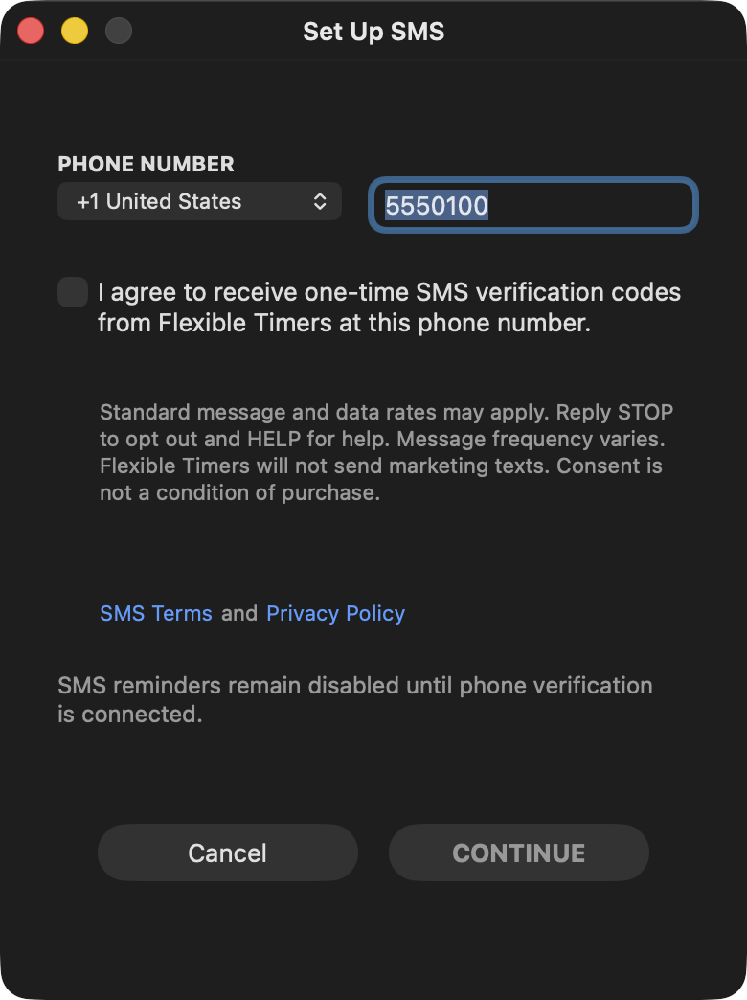

Flexible Timers SMS Opt-In Evidence
This page documents the Flexible Timers SMS opt-in flow for Twilio toll-free verification. Flexible Timers SMS is currently limited to one-time verification codes for a signed-in user's own account phone number. Flexible Timers does not send marketing text messages.
Opt-In Flow
- User signs in to Flexible Timers.
- User opens Account Info.
- User opens Set Up SMS.
- User enters their own phone number.
- User checks the SMS consent checkbox.
- User can open the SMS Terms and Privacy Policy links from the same screen.
- User clicks Continue to request a one-time verification code.
Consent Language
I agree to receive one-time SMS verification codes from Flexible Timers at this phone number. Standard message and data rates may apply. Reply STOP to opt out and HELP for help. Message frequency varies. Flexible Timers will not send marketing texts. Consent is not a condition of purchase.
Screenshot
The opt-in screen shows the phone number field, affirmative checkbox, consent language, SMS Terms link, Privacy Policy link, STOP/HELP wording, frequency disclosure, and message/data rates disclosure.

Sample Message
Flexible Timers verification code: 123456. This code expires in 10 minutes. Reply STOP to opt out, HELP for help.
Support and Policies
Last updated: May 27, 2026.